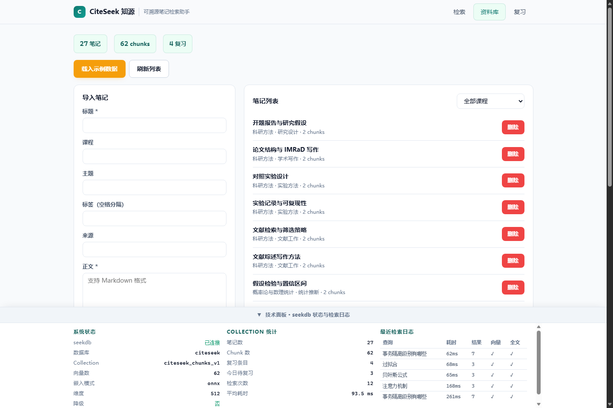
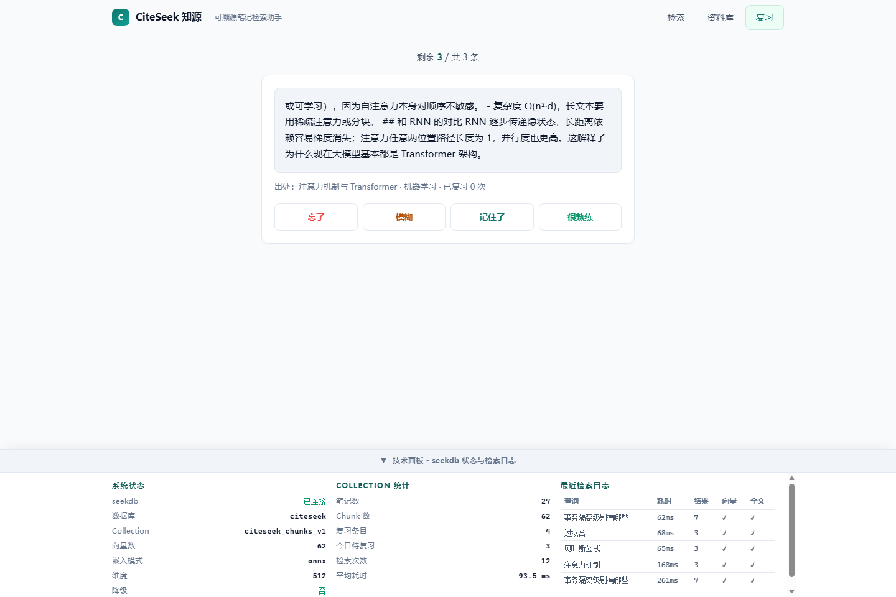
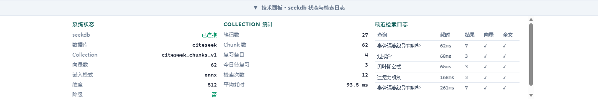
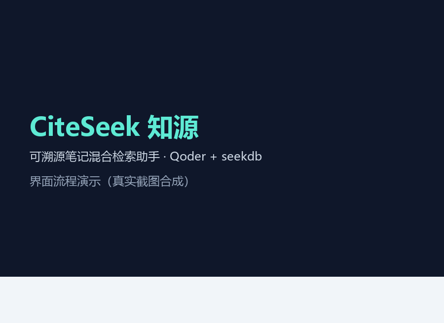
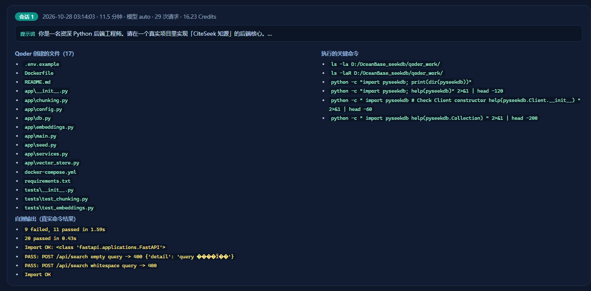
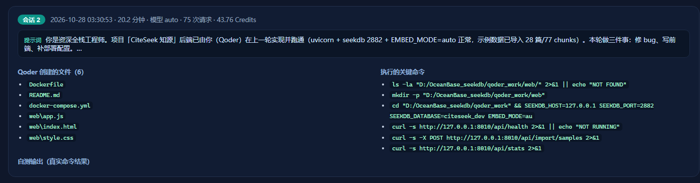
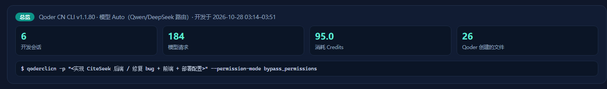

记得讲过，却翻不到
只记得“老师讲过某个概念”，翻遍十几个 Markdown / Word 文件，也找不到那句原话。
Problem · 解决的问题
痛点来自团队成员期末复习与写论文时的真实经历，不是假设出来的需求。
只记得“老师讲过某个概念”，翻遍十几个 Markdown / Word 文件，也找不到那句原话。
关键词检索依赖原词，同义表达直接漏召回；纯向量检索又会召回“意思相近但事实不对”的片段。
结果不给来源与导入时间，无法判断可信度；找到了也不会顺手复习，下次还得再找一遍。
Features · 核心功能
四个功能都直接对应上面的痛点，并且全部围绕 seekdb 的检索能力展开。
向量语义 + 全文关键词 + 课程 / 主题过滤在 seekdb 内一次完成，RRF 融合；每条结果都带资料名、课程与所在段落。
粘贴文本或导入 Markdown / TXT，按段落与句子切块并保留重叠，逐块写入 collection；按标题判重，重复载入不出脏数据。

命中的片段一键加入复习清单，按简化 SM-2 算法安排到期时间；复习进度与间隔同样存在 seekdb 的业务表里。

持续展示 seekdb 连接状态、collection 统计与最近检索日志（query / 耗时 / 结果数 / 向量与全文命中），评审可直接核对。

Demo · 演示
左侧是真实检索界面；右侧是同一次查询的真实返回内容（含出处、命中来源与耗时）。
输入
事务隔离级别有哪些
返回
命中 5 个片段，Top-1 来自《MVCC 版本链与 Read View》：
“事务隔离级别「MVCC 的可见性判断 + 锁」共同实现，这篇只整理 MVCC 这一半。RC 每条 SELECT 重建 Read View，能读到别人已提交的新数据；RR 事务内复用同一个 Read View，于是可重复读；MVCC 只解决读不加锁，写写冲突仍然靠锁。”
出自：《MVCC 版本链与 Read View》· 第 3 段 · 课程「数据库系统」/ 主题「事务与并发」

Under the hood · 技术架构
应用层只负责算向量与编排，召回与排序都在 seekdb 内完成；业务数据同样落在 seekdb（MySQL 协议）。
BGE-zh 512 维嵌入，cosine
query 关键词 $contains
course / topic / created_day
hybrid_search 一次下发两类查询，RRF 融合后返回 top-k 片段
RRF · rank_window_size 60pymysql / pyseekdb 读写
原生 HTML/CSS/JS，由 FastAPI 托管
bge-small-zh-v1.5 计算：查询侧加检索前缀，入库文档不加。hybrid_search。search_log 供技术证据展示。EMBED_MODE=auto 优先本地 ONNX 推理；模型不可用时退化为 512 维字符 n-gram 哈希向量，接口返回 embed.degraded=true。若引擎不支持 hybrid_search，则在应用层分别取向量与全文结果再做 RRF，并在响应中标记降级，检索链路不中断。
chunk 文本与 metadata 存入 citeseek_chunks_v1；语义相近但用词不同的片段靠向量路召回。
query 原词通过 $contains 参与全文匹配，保证术语、公式名、专有名词这类精确命中不被语义路稀释。
notes、review_items、search_log 三张表通过 MySQL 协议写在 seekdb 中，复习进度与检索日志可用 SQL 直接核对。
Evidence · 技术证据
下列数字与日志来自 2026-10-28 本地真实运行（notes 27 / chunks 62，5 次查询平均 138.6 ms，首次含模型预热 363 ms），可按本节末尾命令复核。
1
collection
citeseek_chunks_v1 · 512 维 · HNSW cosine
27
notes
data/samples 示例笔记
62
chunks
平均每篇约 2.3 段
138.6 ms
平均检索耗时
5 次查询均值（首次含预热 363 ms）
真实运行记录（2026-10-28）· 可调用 GET /api/logs/search 复核
| 时间 | query | 模式 | 耗时 | 结果数 | 命中来源 |
|---|---|---|---|---|---|
| 04:14:58 | 检索 | hybrid | 174 ms | 4 | 向量 全文 |
| 04:14:58 | 索引 | hybrid | 65 ms | 8 | 向量 全文 |
| 04:14:57 | 索引 | hybrid | 43 ms | 8 | 向量 全文 |
| 04:14:57 | 并发事务之间的可见性怎么保证 | hybrid | 48 ms | 5 | 向量 全文 |
| 04:14:56 | 事务隔离级别有哪些 | hybrid | 363 ms | 5 | 向量 全文 |
在本地核对同一份证据
curl -s http://localhost:8000/api/logs/search?limit=5
curl -s http://localhost:8000/api/stats
# seekdb 走 MySQL 协议，结构化表可直接用 SQL 核对
mysql -h127.0.0.1 -P2881 -uroot citeseek \
-e "SELECT query, took_ms, result_count, used_vector, used_fulltext FROM search_log ORDER BY id DESC LIMIT 5;"Build with Qoder · 开发记录
以下时间线对应 Qoder CN CLI 的 6 个真实会话（2026-10-28 03:14–05:19，共 184 次模型请求、95 Credits、23 个文件由 Qoder 创建；含后端实现、修复与前端、评委视角自审，以及两次 Qoder Sites 发布会话），截图由会话日志自动抽取。
先把 11 项硬内容与 6 条验收标准拆成任务清单，再定数据模型与 API 契约；Qoder 负责把口头需求整理成设计文档，减少返工。
Qoder 生成初始化代码：512 维 cosine 的 citeseek_chunks_v1，以及 notes / review_items / search_log；启动时重试等待 seekdb 就绪。

实现 POST /api/search：查询向量、$contains 关键词与 where 过滤一次下发；结果带 matched_by 标记并写入 search_log。

Qoder 直接产出原生 HTML/CSS/JS：检索、资料库、复习三个视图，关键词高亮与出处标签由前端完成，技术面板固定展示 seekdb 状态与日志。
pytest 覆盖切块、嵌入（hash 模式）与 API 冒烟；定位并修复“导入后新数据查不到”——seekdb 向量索引异步构建，需在批量导入后显式刷新索引。

补齐 Dockerfile、docker-compose 与运行 / 验证文档，按分支提交代码仓库，并用 Qoder Sites 托管本展示站。
Qoder 账号：nick1732629033 UID：用于评审核对开发账号归属与站点所有权。
Run it · 运行说明
环境要求：Docker 24+ 与 Docker Compose v2。首次启动会拉取 seekdb 镜像并下载嵌入模型，请预留网络与磁盘。
git clone https://github.com/closer2005/powercontext2026.git
cd powercontext2026/qoderdocker compose up -d --build预期：seekdb 健康检查通过后，citeseek 开始建表并初始化 collection，首次约 1–3 分钟。
点击页面「载入示例数据」，或执行下面命令（幂等，可重复执行）。
curl -X POST http://localhost:8000/api/import/samples预期：notes ≥ 20、chunks ≥ 60。
自检：curl http://localhost:8000/api/health 应返回 status ok、seekdb.connected true；无外网可用 EMBED_MODE=hash 启动，停止服务用 docker compose down。
Verify · 验证样例
与仓库 docs/VERIFY.md 一致，可在本地逐条复现。
curl -s http://localhost:8000/api/stats预期：notes = 27、chunks = 62（本机实测；随切块参数浮动，验收要求 chunks ≥ 60）。
curl -s -X POST http://localhost:8000/api/search \
-H "Content-Type: application/json" \
-d '{"query":"事务隔离级别","k":5}'返回包含《MVCC 版本链与 Read View》《事务隔离级别与 MVCC》等数据库课程片段；matched_by 同时含 vector 与 fulltext，took_ms 有值，每条结果都带 title 与 seq（第 N 段）。
若结果为空：先确认已载入示例数据，再放宽课程 / 主题筛选或换用同义说法。
同一次查询会在 search_log 新增一行（used_vector=1、used_fulltext=1），collection 条目数不变；记录可在本页「技术证据」区或 GET /api/logs/search 看到。
点击结果上的「加入复习」后，GET /api/review/due 能取到该片段；评分后 due_at 被推后，reps 与 interval_days 相应变化。
Materials · 提交材料
按赛题「四、提交材料」逐项对照；每项都能在本页或代码仓库中直接核对。
题目 600078 · Qoder 赛题
| 材料 | 位置 | 核对方式 |
|---|---|---|
| 项目网站网址 | citeseek-gzqd7ingk4d.qoder.zone | 本页即 Qoder Sites 发布站点，未登录可直接访问；可见范围 public |
| 代码仓库 | powercontext2026 · qoder/ | 公开仓库，含 app/ web/ data/ tests/ docs/ site/ 全量源码 |
| 运行说明 | 本页「运行说明」 / docs/RUNBOOK.md | docker compose up -d --build → 打开 localhost:8000 |
| 验证样例 | 本页「验证样例」 / docs/VERIFY.md | 3 组样例均给出 curl、预期字段与 seekdb 证据 |
| Qoder 开发记录 | 本页「开发记录」 / docs/QODER_DEV_RECORD.md | 6 个真实会话、184 次请求、95 Credits（含开发、自审与两次 Qoder Sites 发布）；账号与 UID 见开发记录区 |
| 技术证据 | 本页「技术证据」 / /api/logs/search | search_log 含 query/耗时/结果数/向量与全文命中；collection 62 条 |
Self-test · 自测数据
数据来自本地真实运行日志（docs/verify_output.json），非模拟；项目尚未开展真实用户测试，因此不提供用户规模数据。
27
示例笔记
data/samples 目录，含 front-matter
62
chunks
平均每篇约 2.3 段
138.6 ms
平均检索耗时
5 次查询均值
363 ms
首次查询耗时
含 BGE ONNX 模型预热
used_vector 与 used_fulltext 均为 1，证明每次查询都走了混合检索路径/api/review/due 返回 1 条，评分 grade=2 后 interval_days=1、ease=2.52、due_at 推后 1 天onnx，模型 BAAI/bge-small-zh-v1.5，维度 512；Docker 容器路径同样验证通过EMBED_MODE=hash 后关键词检索仍可用，语义召回变弱（符合预期，/api/health 中 embed.degraded 会标记）